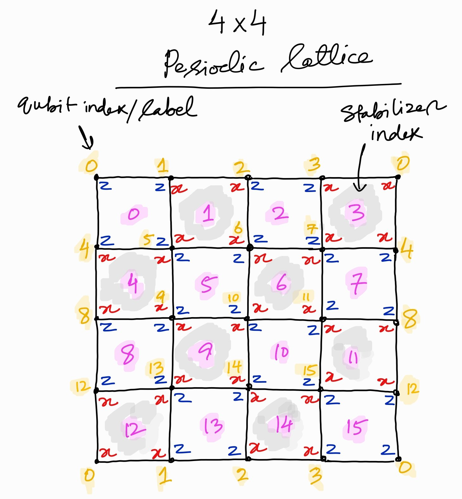

Topological Order from Measurements and Feed-Forward¶
Introduction¶
Quantum states with long-range entanglement play key roles in a wide range physics such as quantum information, condensed matter, and high-energy physics. However, preparing long-range entangled states requires extensive circuit depth if restricted to unitary dynamics. This is problematic when one tries to implement it on a near-term quantum device whose coherence time is severely limited. An alternative approach is to make use of mid-circuit measurement and feed-forward, which enable constant-depth, deterministic, non-unitary state preparation.
This notebook implements the mid-circuit measurement and feed-forward strategy in arXiv 2302.01917 to prepare the ground states of the Wen-plaquette model on a Torus. The Wen-Plaquette model exhibits the same topological order as the Toric code in arXiv 0904.2771.
Toric Code¶
We consider a variant of the Toric code, Wen-plaquette model, which is described by the stabilizer Hamiltonian on a square lattice,
where \(A_a=X^{\otimes 4}\) and \(B_b=Z^{\otimes 4}\) are commuting Pauli operators supported on plaquettes \(a\) and \(b\). The sets \(\mathcal{A}\) and \(\mathcal{B}\) consist of \(X\)- and \(Z\)-type plaquettes shown in the figure below.
In this notebook, the state is prepared on a 4x4 square lattice with qubits on the vertices. Blue-\(ZZZZ\) and Red-\(XXXX\) Pauli strings within each plaquette, as shown below, define the stabilizer for that plaquette.
Our goal is to prepare a state stabilized by the group generated by all the \(A\)’s and \(B\)’s.
{kind=link}
Stabilizer Formalism¶
Before diving into coding, let us quickly review the stabilizer formalism. We first introduce the Pauli group \(G_n\) on \(n\) qubits. For a single qubit, the group consists of all the Pauli matrices with multiplicative factors \(\pm 1\), \(\pm i\),
which is generalized to \(G_n=(G_1)^{\otimes n}\), i.e., all the \(n\)-qubit Pauli matrices with multiplicative factors \(\pm 1\), \(\pm i\).
Let \(S\) be the commuting subgroup of \(G_n\) and \(V_S\) a set of \(n\)-qubit states that are fixed by every element of \(S\), i.e., \(V_S=\{|\psi\rangle \mid s|\psi\rangle=|\psi\rangle \text{ for all }s\in S\}\). Then, we say,
\(V_S\) is the vector space stabilized by \(S\), and
\(S\) is the stabilizer of the space \(V_S\).
Suppose \(S\) consists of the generators \(S_1, \dots, S_r\),
Then, the vector space \(V_S\) stabilized by \(S\) forms the ground space of the following stabilizer Hamiltonian \(H\),
Therefore, finding the ground state of stabilizer Hamiltonian \(H_S\) is equivalent to identifying the stabilizer states of the corresponding \(S\).
Here, we introduce a PauliStabilizer class repesenting a Pauli operator that forms a stabilizer group. For the purpose of this notebook, we only consider the Pauli operators that are made up only of \(Z\) or \(X\) Pauli operators. Then, each PauliStabilizer instance is specified by:
pauli_type: type of Pauli operator (\(X\) or \(Z\)), andsupport: qubit indices where the nontrivial Paulis are supported.
For instance, \(X_0X_1X_2X_3\) is specified by pauli_type="X" and support=[0,1,2,3].
class PauliStabilizer:
def __init__(self, pauli_type: str, support: list[int]):
"""Instantiates a Pauli stabilizer operator.
Args:
pauli_type (str): Type of the Pauli operator, "X" or "Z".
support (list[int]): Qubit indices on which nontrivial paulis acts on.
"""
self.pauli_type = pauli_type
self.support = support
def __repr__(self):
s = f"{self.pauli_type}{self.support[0]}"
for i in self.support[1:]:
s += f".{self.pauli_type}{i}"
return s
A stabilizer operator test_stab is instantiated as follows.
test_stab = PauliStabilizer("X", [0, 1, 2, 3])
print(f"Test stabilizer: {test_stab}")
We instantiate all 16 stabilizers for the state preparation, each of which is identified by its pauli-type and the qubits supporting its plaquette. In the figure shown above, they live on the plaquettes labeled (numbers in pink text) as follows:
\(X\)-stabilizers \(A_a\): \(a = [1, 3, 4, 6, 9, 11, 12, 14]\)
\(Z\)-stabilizers \(B_b\): \(b = [0, 2, 5, 7, 8, 10, 13, 15]\)
We also use 4 ancillary qubits, making the total number of qubits 20.
n_qubits = 20
# Define stabilizers
stabilizers = []
stabilizers.append(PauliStabilizer("Z", [0, 1, 4, 5])) # stabilizer 0 (Z0 Z1 Z4 Z5)
stabilizers.append(PauliStabilizer("X", [1, 2, 5, 6])) # stabilizer 1 (X1 X2 X5 X7)
stabilizers.append(PauliStabilizer("Z", [2, 3, 6, 7])) # stabilizer 2
stabilizers.append(PauliStabilizer("X", [3, 0, 7, 4])) # stabilizer 3
stabilizers.append(PauliStabilizer("X", [4, 5, 8, 9])) # stabilizer 4
stabilizers.append(PauliStabilizer("Z", [5, 6, 9, 10])) # stabilizer 5
stabilizers.append(PauliStabilizer("X", [6, 7, 10, 11])) # stabilizer 6
stabilizers.append(PauliStabilizer("Z", [7, 4, 11, 8])) # stabilizer 7
stabilizers.append(PauliStabilizer("Z", [8, 9, 12, 13])) # stabilizer 8
stabilizers.append(PauliStabilizer("X", [9, 10, 13, 14])) # stabilizer 9
stabilizers.append(PauliStabilizer("Z", [10, 11, 14, 15])) # stabilizer 10
stabilizers.append(PauliStabilizer("X", [11, 8, 15, 12])) # stabilizer 11
stabilizers.append(PauliStabilizer("X", [12, 13, 0, 1])) # stabilizer 12
stabilizers.append(PauliStabilizer("Z", [13, 14, 1, 2])) # stabilizer 13
stabilizers.append(PauliStabilizer("X", [14, 15, 2, 3])) # stabilizer 14
stabilizers.append(PauliStabilizer("Z", [15, 12, 3, 0])) # stabilizer 15
At the end of the preparation we will check all the \(X\)- and \(Z\)-stabilizers.
Below, pauli_settings collects the qubits required to compute all the \(X\)- or \(Z\)-stabilizers.
# set of stabilizers which can be measured in one measurement setting
stabilizer_buckets = {}
stabilizer_buckets["X"] = [1, 3, 4, 6, 9, 11, 12, 14] # all x-stabilizers' indices
stabilizer_buckets["Z"] = [0, 2, 5, 7, 8, 10, 13, 15] # all z-stabilizers' indices
pauli_settings = {}
for label, bucket in stabilizer_buckets.items():
support = []
for i in bucket:
pauli = stabilizers[i].pauli_type
support += stabilizers[i].support
support = list(set(support))
pauli_settings[label] = PauliStabilizer(pauli, support)
Stabilizer Measurement¶
We implement two routines for measuring Pauli strings:
measure_pauli_stringmeasures a Pauli string non-destructively using an ancilla.measure_pauli_string_destructivelymeasures a Pauli string destructively. It is used at the end of the circuit to measure the expectation values of stabilizers.
from pytket import Circuit, OpType
from pytket.circuit import Qubit, Bit, QubitRegister, BitRegister
def measure_pauli_string(
circuit: Circuit, stabilizer: PauliStabilizer, c_bit: Bit, anc_qubit: Qubit
) -> Circuit:
"""Returns a circuit that measures a paulistring non-destructively.
Args:
circuit (Circuit): Circuit on which the measurement is added.
stabilizer (PauliStabilizer): Operator to be measured.
c_bit (Bit): A classical bit that stores the measurement outcome.
anc_qubit (Qubit): An ancillary qubit for the stabilizer measurement.
Returns:
Circuit: Circuit to measure stabilizers.
"""
circ = circuit.copy()
q_reg = circ.q_registers[0]
for i in stabilizer.support:
if stabilizer.pauli_type == "X":
circ.H(q_reg[i])
circ.CX(q_reg[i], anc_qubit)
circ.H(q_reg[i])
elif stabilizer.pauli_type == "Z":
circ.CX(q_reg[i], anc_qubit)
circ.Measure(anc_qubit, c_bit)
circ.add_gate(OpType.Reset, [anc_qubit])
return circ
Let us visualize the circuit for a non-destructive stabilizer (syndrome) measurement.
The circuit below measures the Pauli string, \(X_0X_1X_2X_3\), non-destructively with use of the ancillary qubit q_anc[0]. The outcome is stored in the single-bit classical register c[0].
from pytket.circuit.display import render_circuit_jupyter
circ = Circuit()
q_reg = QubitRegister("q", 4)
q_anc = QubitRegister("q_anc", 1)
c_reg = BitRegister("c", 1)
circ.add_q_register(q_reg)
circ.add_c_register(c_reg)
circ.add_q_register(q_anc)
circ = measure_pauli_string(circ, test_stab, c_reg[0], q_anc[0])
render_circuit_jupyter(circ)
def measure_pauli_string_destructively(
circuit: Circuit, stabilizer: PauliStabilizer, c_reg: BitRegister
) -> Circuit:
"""Returns a circuit that measures pauli-string destructively.
Args:
circuit (Circuit): Circuit on which the measurement is added.
stabilizer (PauliStabilizer): Operator to be measured.
c_reg (BitRegister): Classical register that stores the measurement outcome.
Returns:
Circuit: Circuit to measure a stabilizer destructively.
"""
circ = circuit.copy()
q_reg = circ.q_registers[0]
for i in stabilizer.support:
if stabilizer.pauli_type == "X":
circ.H(q_reg[i])
circ.Measure(q_reg[i], c_reg[i])
return circ
Let us also visualize the circuit for a destructive measurement. The circuit below measures the Pauli string, \(X_0X_1X_2X_3\), destructively.
circ = Circuit()
q_reg = QubitRegister("q", 4)
c_reg = BitRegister("c", 4)
circ.add_q_register(q_reg)
circ.add_c_register(c_reg)
circ = measure_pauli_string_destructively(circ, test_stab, c_reg)
render_circuit_jupyter(circ)
Stabilizer Measurements and Corrections¶
The \(Z\) stabilizers are already satisfied since the qubits are initialized in the \(|\bf{0}\rangle\) state. We prepare \(X\) stabilizers in two rounds.
1st round:
We measure \(XXXX\) Pauli strings for plaquette 4, 6, 12, and 14. If the measurement outcome for the plaquette is -1, we act with a Pauli-\(Z\) gate on the upper-right qubit of the plaquette. This cleans up the plaquette and moves the error (anyon) to the diagonally adjacent \(XXXX\) plaquette.
2nd round:
We measure \(XXXX\) Pauli strings for plaquettes 1, 3, 9, and 11. If the measurement outcomes are not all +1, we correct for errors using a lookup table decoder. The lookup table is designed in such a way that the anyons are fused to disapper from the surface.
Here is the implementation of decoders for the two rounds.
Let us consider what the 1st round of decoding does. Suppose the operator \(A_4\) on the plaquette 4, is measured to -1. Then, we apply \(Z\) on qubit 5 to flip the sign of \(A_4\) and \(A_1\). We similary apply conditional \(Z\) gates on the plaquettes 6, 12, 14. Therefore, the stabilizer \(A_4, A_6, A_{12}, A_{14}\) all take the value +1 after the 1st round.
def decoder_1st(
circuit: Circuit,
c_regs: list[BitRegister],
stabilizer_idx_map: dict[int, tuple[int]],
) -> None:
"""Returns a circuit to apply Z gates on the plaquettes where their measurement outcomes are 1.
Args:
circuit (Circuit): Circuit for which the stabilizer measurement is applied
c_regs (list[BitRegister]): A list of classical registers storing the outcomes
stabilizer_idx_map (dict[int, tuple[int]]): Map form stabilizer index to quantum/classical registers
Returns:
Circuit: The 1st layer of decoder circuit added to the input circuit.
"""
circ = circuit.copy()
q_reg = circ.q_registers[0]
for idx, (target_qubit, _, _) in enumerate(stabilizer_idx_map.values()):
# Z gate conditioned on a classical register
circ.Z(
q_reg[target_qubit],
condition_bits=c_regs[idx], # conditioned on a single-bit register
condition_value=int("1", 2), # applied when conditional bit is "1"
)
return circ
For the 2nd round, the corrections are applied according to the look-up table:
|
qubits where \(Z\)’s are applied |
|---|---|
0011 |
[10,11] |
0101 |
[4,8] |
0110 |
[0,13] |
1001 |
[2,15] |
1010 |
[5,9] |
1100 |
[6,7] |
1111 |
[2,3,14,15] |
The bits in each bit-string in the first column correspond to the outcomes of measuring \(A_1, A_3, A_9, A_{11}\). There are only the bit-strings that contains even number of errors (anyon excitations) because errors can exist only as pairs.
Let’s take a look at the first row in the table, where the syndrome is 0011, meaning the measurements of \(A_9\) and \(A_{11}\) are -1. Then, if we apply \(Z\) gates on the qubits 10 and 11, the values of \(A_9\) and \(A_{11}\) are flipped. Also, note that the qubits are chosen in such a way that other errors are not created. In this case, 9 and 11 are both on the plaquette 6, and thus an error is not created there or anywhere else.
In the following function, \(Z\) gates are applied whenever the c_reg flags the syndromes.
def decoder_2nd(circuit: Circuit, c_reg: BitRegister) -> None:
"""Returns a circuit to apply Z gates according to a lookup table.
Args:
circuit (Circuit): Circuit for which the stabilizer measurement is applied.
c_reg (BitRegister): Classical register storing the outcomes.
Returns:
Circuit: The 2nd layer of decoder circuit added to the input circuit.
"""
circ = circuit.copy()
def correct(syndrome: str, loc_Zs: list[int]) -> None:
"""Apply Z gates according to the syndrome.
Args:
syndrome (str): syndrome of stabilizers (1,3,9,11)
loc_Zs (list[int]): qubit indices where Z's (corrections) are applied.
"""
cond_value = int(syndrome[::-1], 2)
for i in loc_Zs:
circ.Z(q_reg[i], condition_bits=c_reg, condition_value=cond_value)
# Corrections according to look-up table.
# If c_reg flags the syndrom "0011", Z's are applied on qubits 10 and 11.
# The following lists all the possible syndromes and corrections.
correct("0011", [10, 11])
correct("0101", [4, 8])
correct("0110", [0, 13])
correct("1001", [2, 15])
correct("1010", [5, 9])
correct("1100", [6, 7])
correct("1111", [2, 3, 14, 15])
return circ
Circuit construction¶
We summarize a three-step procedure to prepare the ground state of the Toric code Hamiltonian deterministically and in constant-depth.
Initialize all qubits in \(|0\rangle\), results in \(\langle B_p\rangle=1\) for all \(p\in\mathcal{B}\).
Measure all the \(A_p\) operators, implementing the projectors \((I\pm A_p)/2\) with equal probability.
Apply conditional 1-qubit \(Z\) gates to flip all the plaquettes where \(A_p=-1\) is measured.
We start with setting up quantum and classical registers used in the protocol.
q_reg: 16 system qubits plus 4 ancillary qubits used for stabilizer/syndrome measurements.c_regs_1st: a list of 4 1-qubit classical registers to store the 1st round of \(X\)-stabilizer measurement outcomes.c_reg_2nd: a 4-bit classical register to store the 2nd round of \(X\)-stabilizer measurement outcomes.c_reg_end: a 20-bit classical register to store the destructive measurement outcomes obtained at the end of the circuit.
We start with the initilization.
circ = Circuit()
q_reg = QubitRegister("q", n_qubits)
circ.add_q_register(q_reg)
# Contains the outcome for stabilizers prepared by measurement
c_regs_1st = []
for i in range(4):
c_regs_1st.append(BitRegister(f"c{i}_1st", 1))
circ.add_c_register(c_regs_1st[i])
c_reg_2nd = BitRegister("c4_2nd", 4)
circ.add_c_register(c_reg_2nd)
# Contains the measurement outcome for pauli strings at the end
c_reg_end = BitRegister("c5_end", n_qubits)
circ.add_c_register(c_reg_end)
At this point, all the qubits in q_reg are initilized to \(|0\rangle\). Therefore, the initial state is a stabilizer state of all \(B\)’s. In the rest of the protocol, we attempt to enforce the stabilizer condition with respect to \(A_a\).
We turn to the \(X\)-stabilizers:
Measure \(XXXX\) Pauli strings for plaquette 4, 6, 12, and 14. If the measurement outcome for the plaquette is -1, we act with a Pauli-\(Z\) gate on the upper-right qubit of the plaquette. This cleans up the plaquette and moves the error (anyon) to the diagonally adjacent \(XXXX\) plaquette.
# 1st round of stabilizer measurements
# Measurements on stabilizers (4,6,12,14)
stabilizer_idx_map = {
4: (5, 16 + 0, 0), # index -> (target_qubit, aux_qubit_idx, c_bit_idx)
6: (7, 16 + 1, 1),
12: (13, 16 + 2, 2),
14: (15, 16 + 3, 3),
}
# Apply measurements
for stabilizer_idx, (_, anc_qubit_idx, c_bit_idx) in stabilizer_idx_map.items():
c_bit = c_regs_1st[c_bit_idx][0]
circ = measure_pauli_string(
circ,
stabilizers[stabilizer_idx],
c_bit,
q_reg[anc_qubit_idx],
)
# circ.add_barrier(list(range(n_qubits))) # for visualization
# If the measurement outcome is 1, we move the anyon to the nearby x-plaquette
circ = decoder_1st(circ, c_regs_1st, stabilizer_idx_map)
After the layer of \(X\)-stabilizer measurements, we apply corrections depending on the measurement outcomes. For this operation, we make use of mid-circuit measurements and feed-foward, visualized in the circuit below.
render_circuit_jupyter(circ)
Measure \(XXXX\) Pauli strings for plaquettes 1, 3, 9, and 11. If the measurement outcomes are not all +1, we correct for errors using a lookup table decoder.
# 2nd round of stabilizer measurements
# Measurements on stabilizers (1,3,9,11)
stabilizer_idx_map = {
1: (-1, 16 + 0, 0),
3: (-1, 16 + 1, 1),
9: (-1, 16 + 2, 2),
11: (-1, 16 + 3, 3),
}
# Apply measurements
for stabilizer_idx, (_, anc_qubit_idx, c_bit_idx) in stabilizer_idx_map.items():
c_bit = c_reg_2nd[c_bit_idx]
circ = measure_pauli_string(
circ,
stabilizers[stabilizer_idx],
c_bit,
q_reg[anc_qubit_idx],
)
# circ.add_barrier(list(range(n_qubits))) # for visualization
# If the measurement outcome is 1, apply error correction according to a look-up table
circ = decoder_2nd(circ, c_reg_2nd)
Finally, we measure the qubits destructively to read off all the \(X\)- or \(Z\)-stabilizer values.
circ.add_barrier(list(range(n_qubits)))
# Measure Z's or X's at the end
setting_label = "X"
# Measure qubits to compute expectation values of stabilizers
circ = measure_pauli_string_destructively(
circ, pauli_settings[setting_label], c_reg_end
)
Now, we visualize the entire circuit.
render_circuit_jupyter(circ)
Noiseless Simulation¶
Now we run the circuit and measure the expectation value of \(XXXX\) or \(ZZZZ\) stabilizer at the end.
Execution¶
The pytket-quantinuum package is used to access Quantinuum hardware & emulators.
For this simulation, the H1-2E emulator is used.
Additional configurations are provided to an instance of QuantinuumBackend,
in order to disable the error-model.
from pytket.extensions.quantinuum import QuantinuumBackend
job_options = {"error-model": False}
backend = QuantinuumBackend(device_name="H1-2E", options=job_options)
compiled_circ = backend.get_compiled_circuit(circ, optimisation_level=0)
noiseless_handle = backend.process_circuit(compiled_circ, n_shots=50)
The Job ID is printed in the code cell below, using the `handle._identifiers`` attribute. The first element of this list is the ID if the job submitted to the Quantinuum emulator.
noiseless_handle._identifiers[0]
Analysis¶
Let us analyze the results.
import numpy as np
import pandas as pd
We retrieve the result using get_result and measurement results with get_shots.
noiseless_result = backend.get_result(noiseless_handle)
noiseless_shots_table = noiseless_result.get_shots().astype(dtype=np.int32)
In the circuit, we have 6 classical registers for mid-circuit and final measurements. c_registers shows all the registers.
circ.c_registers
The shots are split into the outcomes corresponding to these classical regsiters.
noiseless_shots_dict = {}
cnt = 0
for reg in circ.c_registers:
noiseless_shots_dict[reg.name] = noiseless_shots_table[:, cnt : cnt + reg.size]
cnt += reg.size
We focus on the shots collected from the classical register named c5_end. This corresponds to the final measurement, which allows us to reconstruct all the \(X\)-stabilizers (\(Z\)-stabilizers) for setting_label="X" (setting_label="Z").
noiseless_outcomes_dict = {}
stab_list = [f"s{i}" for i in stabilizer_buckets[setting_label]]
for i, c5_shot in enumerate(noiseless_shots_dict["c5_end"]):
outcome = []
for idx in stabilizer_buckets[setting_label]:
outcome.append(np.prod(1 - 2 * c5_shot[[j for j in stabilizers[idx].support]]))
noiseless_outcomes_dict[f"{i:03d}"] = outcome
The following dataframe shows all the measurement outcomes of
\(X\)-stabilizers (s1, s3, s4, s6, s9, s11, s12, s14), or
\(Z\)-stabilizers (s2, s5, s7, s8, s10, s13, s15, s16)
for each shot. Here we show the results coming from the 50 shots. All the stabilizers take the values 1 as expected in noiseless simulations. This implies the ground state of Toric code is successfully prepared.
df = pd.DataFrame.from_dict(noiseless_outcomes_dict, orient="index", columns=stab_list)
df
We take the average of 50 shots.
outcomes_array = np.asarray(list(map(np.asarray, noiseless_outcomes_dict.values())))
stabilizer_expectation_values = np.mean(outcomes_array, axis=0)
series = pd.Series(stabilizer_expectation_values, index=stab_list)
series
Noisy Simulation¶
Execution¶
Next, we turn on the error-model. The backend emulate the H1-2 hardware if we do not specify options.
backend = QuantinuumBackend(device_name="H1-2E")
compiled_circ = backend.get_compiled_circuit(circ, optimisation_level=0)
noisy_handle = backend.process_circuit(compiled_circ, n_shots=50)
Analysis¶
We carry out the same analysis as in the noiseless case.
noisy_result = backend.get_result(noisy_handle)
noisy_shots_table = noisy_result.get_shots().astype(dtype=np.int32)
# Split shots into outcomes for each classical registers
noisy_shots_dict = {}
cnt = 0
for reg in circ.c_registers:
noisy_shots_dict[reg.name] = noisy_shots_table[:, cnt : cnt + reg.size]
cnt += reg.size
noisy_outcomes_dict = {}
stab_list = [f"s{i}" for i in stabilizer_buckets[setting_label]]
for i, c5_shot in enumerate(noisy_shots_dict["c5_end"]):
outcome = []
for idx in stabilizer_buckets[setting_label]:
outcome.append(np.prod(1 - 2 * c5_shot[[j for j in stabilizers[idx].support]]))
noisy_outcomes_dict[f"{i:03d}"] = outcome
The following dataframe shows all the noisy measurement outcomes of
\(X\)-stabilizers (s1, s3, s4, s6, s9, s11, s12, s14), or
\(Z\)-stabilizers (s2, s5, s7, s8, s10, s13, s15, s16)
for each shot. Some entries show the value -1, which is due to the noise effect.
df = pd.DataFrame.from_dict(noisy_outcomes_dict, orient="index", columns=stab_list)
df
Here are the averages of 50 shots. The expectation values of the stabilisers are evaluated below. Due to the Quantinuum noise model, they are not exactly one.
outcomes_array = np.asarray(list(map(np.asarray, noisy_outcomes_dict.values())))
stabilizer_expectation_values_noisy = np.mean(outcomes_array, axis=0)
data_expectation = np.asarray(
[stabilizer_expectation_values, stabilizer_expectation_values_noisy]
).transpose()
df_expectation = pd.DataFrame(
data_expectation, index=stab_list, columns=["Noisless Emulator", "Noisy Emulator"]
)
df_expectation